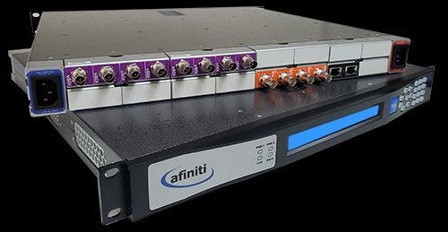
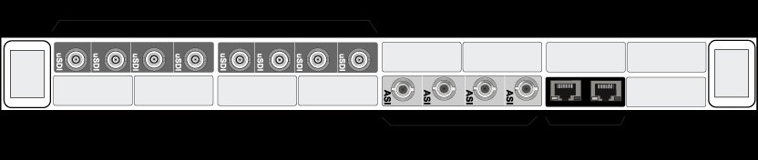
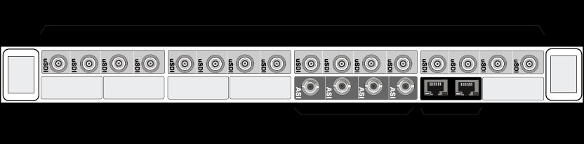
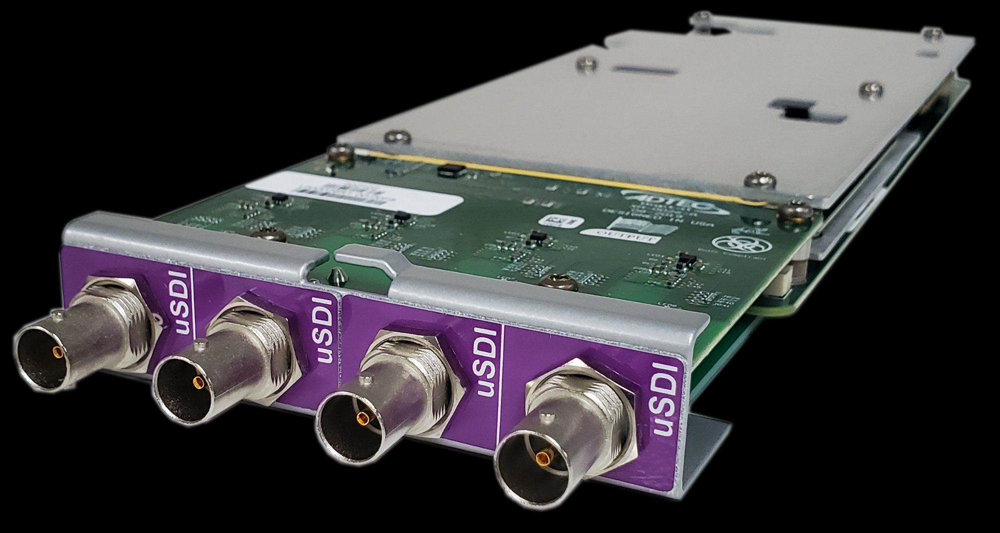
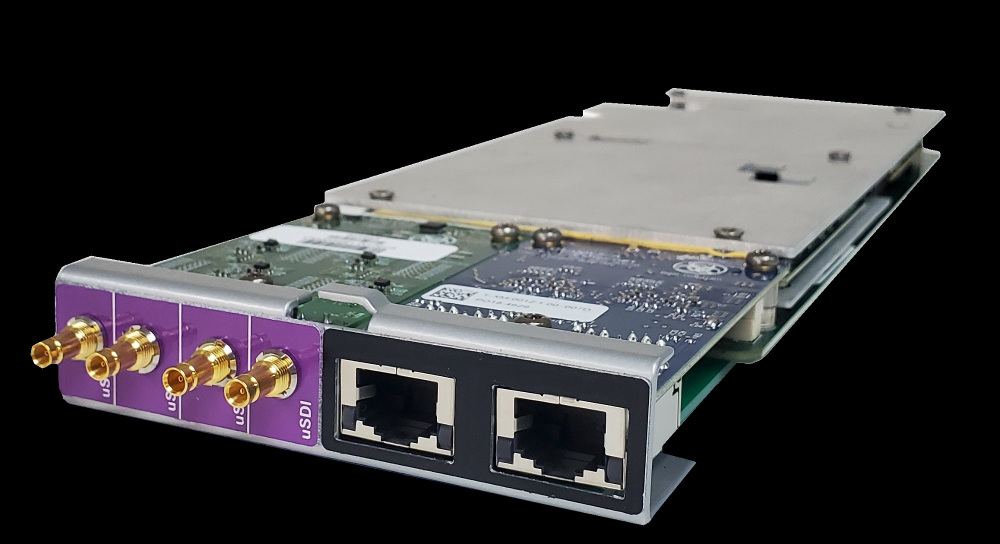

4K(UHD) HEVC / AVC / MP2 Encode and Decode Carriers


Each encoder carrier supports up to four (4) channels of HD/SD encoding or a single 4K(UHD) channel. Each decoder carrier supports up to two (2) channels of HD/SD decoding. Carriers can be combined in one frame along with transport carriers.


Built with multi-channel applications in mind, these configurations provide maximum flexibility. Each frame can support up to 16 HD/SD encoders or 8 HD/SD decoders, includes an on-board IP multiplexer and leaves room for additional multiplexing carriers.


For applications requiring less channel density or a more portable form factor, the AFN-250 offers a smaller, more economical solution. Feature rich and easy to use, with support from 4K HEVC to single channel MPEG2 SD.

4 x 3G-SDI BNC Inputs

4 MiniDin SDI Inputs, 2 GigE Ports (Management and TSOIP)
4 x 3G-SDI BNC Outputs / 1 Primary and Alt per Decoder
4 MiniDin SDI Outputs, 2 GigE Ports (Management and TSOIP)
| Feature Key | Description |
|---|---|
| AFN-4K-UHD | Enables 4K(UHD)/HD/SD resolutions for a single channel of HEVC or AVC. Max 1 per carrier. |
| AFN-HEVC-Channel | Enables HD/SD resolutions for a single channel of HEVC. Also includes AVC and MPEG2. Max 4 per encoder, Max 2 per decoder. |
| AFN-AVC-Channel | Enables HD/SD resolutions for a single channel of AVC. Also includes MPEG2. Max 4 per encoder, Max 2 per decoder. |
| AFN-MPEG2-Channel | Enables HD/SD resolutions for a single channel of MPEG2. Max 4 per encoder, Max 2 per decoder. |
| AFN-10-bit/4:2:2 | Enables 10-bit, 4:2:2 for any applicable CODEC and purchased channel. Max 1 per carrier. |
| AFN-MP/AAC-2Pairs | Enables two pairs of MP1L2, AAC-LC, AAC-HEv1/v2 audio per video. |
| AFN-DDAC3-2Pairs | Enables two pairs of Dolby Digital AC3 audio per video. |
Main, Main 10, Main 4:2:2 10, up to 4K/60p
4K/UHD: 10.0 - 80.0 Mbps | HD: 1.0 - 24.5 Mbps | SD: 0.2 - 3.0 Mbps
Chroma: 4:2:2, 4:2:0 / 10-bit, 8-bit
BP, MP, HP, High 10, High 4:2:2, up to 4K/60p
4K/UHD: 24.0 - 95.0 Mbps | HD: 1.0 - 24.5 Mbps | SD: 0.5 - 16.0 Mbps
Chroma: 4:2:2, 4:2:0 / 10-bit, 8-bit
MP@HL 4:2:0 8-bit, up to 1080/60i
HD: 7.0 - 24.5 Mbps | SD: 1.0 - 15.0 Mbps
Chroma: 4:2:0 / 8-bit
MPEG 1/2 Layer 2: 64-384 Kbit/s, Up to 8 Pairs per Video
DD-AC3: 64-384 Kbit/s, Up to 8 Pairs per Video
AAC-LC: 64-256 Kbit/s, Up to 4 Pairs per Video
AAC-HEv1/v2: 64-256 Kbit/s, Up to 4 Pairs per Video
Passthrough: Dolby E / LPCM: 1.92, 2.31 Mbit/s, Up to 2 Pairs
3G-SDI/HD-SDI/SD-SDI: SMPTE 292M (HD), SMPTE 259M-C (SD)
VBI/VANC: Closed Captioning, OP-47
Encryption: BISS-1 / BISS-E (up to 80 Mbps.)
Latency: Very Low / Low / Normal / Long